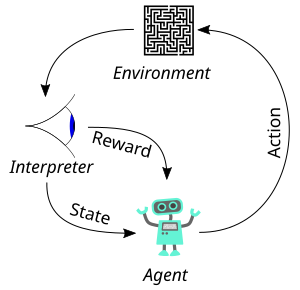

Chapter 00 · Prelude
Why do we need MDPs?
1. Why do we need MDPs?
Reinforcement learning is not “train a network on labels.” It is the problem of an agent that acts over time, gets sparse feedback, and must live with the consequences of earlier choices.
That problem has three stubborn features:
- Sequential dependence. Today’s action changes tomorrow’s state.
- Delayed credit. A reward now may be caused by a choice many steps ago.
- Uncertainty. The same action in the same situation need not always produce the same next state.
An MDP is a mathematical contract that names those features cleanly: states, actions, transitions, rewards, and a discount factor. Without that contract, algorithms have nowhere stable to stand — you cannot even write down what “optimal” means.

Find a policy \(\pi\) that maximizes expected long-run return \(\mathbb{E}_\pi[G_0]\). Everything after Chapter 00 is machinery for that sentence.
2. What came before MDPs
People did not wait for Bellman to invent decision-making. Several older frameworks already tried to answer “what should I do?”
Multi-armed bandits
Pull one arm; get a reward; repeat. Exploration vs exploitation is real — but there is no lasting state. One action does not rearrange the world for later.
no dynamics · only immediate reward
Supervised learning
Map \(x\mapsto y\) from labeled data. Brilliant at perception. Silent about “if I take this action now, what happens three steps later?”
labels · i.i.d. assumption
Open-loop control
Compute a fixed sequence \(a_0,a_1,\ldots\) in advance and play it. Works if the world is nearly deterministic and nothing goes wrong. Brittle the moment noise appears.
plan once · never replan
Classical planning (deterministic)
Search a graph of known, deterministic transitions to a goal. Excellent when \(P\) is known and sharp. Collapses when outcomes are probabilistic or the model is wrong.
known graph · no stochastic P
Reactive / scripted policies
Hand-written rules: “if near wall, turn left.” Fast and interpretable, but they do not optimize long-horizon return and do not generalize when the rule book is incomplete.
if–then · no optimality
Behavior cloning
Imitate expert actions with supervised learning. Fails under distribution shift: the learner drifts off the expert’s state distribution and never recovers (compounding error).
imitate · no recovery
Bandits, SL, planning, and scripts are still useful tools. They failed as a complete theory of sequential decision-making under uncertainty — which is exactly the setting RL targets.
3. Why those ideas failed (for this problem)
Bandits ignore the future world
In a bandit, pulling arm 3 does not change which arms exist tomorrow. In a maze, moving right does change where you are. Credit assignment across time is not optional — it is the whole problem.
Supervised learning has no consequence model
A classifier answers “what label is this?” An agent must answer “what happens if I act?” Without transitions and rewards, there is no notion of a better or worse future — only better or worse predictions of someone else’s labels.
Open-loop plans shatter under noise
Suppose the plan says “go right, right, up.” If the first right slips into a pit, the remaining plan is nonsense. Closed-loop decisions — actions that depend on the current state — are mandatory. That is a policy \(\pi(a\mid s)\), not a fixed tape of actions.
Deterministic planners refuse probability
Real robots slip. Dice roll. Opponents move. If your math assumes \(P(s'\mid s,a)\in\{0,1\}\), then either you pretend the world is sharp or you invent ad-hoc patches. MDPs put the distribution in the model from day one.
Imitation compounds error
Behavior cloning trains \(\hat\pi(a\mid s)\) on expert states. Once the learner takes a slightly wrong action, it visits states the expert never showed — and the trained policy has no preference signal there. Without rewards or a recovery objective, small mistakes become catastrophic trajectories.
Pre-MDP tools either ignored dynamics, ignored uncertainty, ignored delayed reward, or ignored closed-loop feedback — and sequential agents need all four.
4. The missing pieces
To state the sequential decision problem properly we need names for:
| Piece | Why it matters |
|---|---|
| State \(s\) | What the agent knows when it decides |
| Action \(a\) | What it can choose |
| Transition \(P(s'\mid s,a)\) | How the world reacts (possibly randomly) |
| Reward \(R\) | Scalar feedback for preference |
| Discount \(\gamma\) | How much future matters vs now |
| Policy \(\pi(a\mid s)\) | Closed-loop strategy, not open-loop tape |
| Return \(G_t\) | Long-horizon score to maximize in expectation |
Pack those into one object and you have an MDP. That is not fashion — it is the smallest language in which “optimal sequential behavior under uncertainty” is even a well-posed question.
5. What the MDP buys us
Once \(\mathcal{M}=(S,A,P,R,\gamma)\) is on the table:
- We can define value functions \(V^{\pi}\) and \(Q^{\pi}\) (Chapter 02).
- We get Bellman equations — local consistency of long-horizon return.
- We can run Dynamic Programming when \(P\) is known (Chapter 03).
- We can learn from samples when \(P\) is unknown (TD, Q-learning, later chapters).
Every later algorithm is still negotiating with this same object. If the MDP assumption is wrong (non-Markov sensors, missing state), the mathematics quietly lies — which is why state design matters as much as the optimizer.
We need MDPs because earlier frameworks could not jointly express dynamics + uncertainty + delayed reward + closed-loop policies. The MDP is the language. RL is what we do when we speak that language — with a model, or from experience.
6. What follows
Chapter 01 writes the MDP down carefully: the tuple, the Markov property, returns, and policies. Then values and Bellman equations turn the definition into computation.
See also
- Chapter 01 · MDP — formal definition and gridworld lab.
- Chapter 02 · Value — \(V^{\pi}\), \(Q^{\pi}\), Bellman.
- Practice — one \(2\times 3\) world for the whole stack.
Next chapter
Markov Decision Processes
States, actions, \(P\), \(R\), \(\gamma\) — the contract itself.